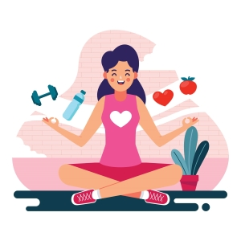
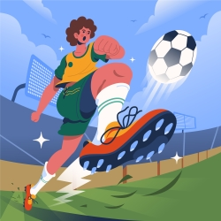

1- Alimentação
Alimentação: faça, no mínimo, cinco refeições ao dia (café da manhã, lanche, almoço, lanche e jantar); coma
frutas, legumes e verduras variados diariamente; evite refrigerantes e salgadinhos; beba pelo menos dois
litros (6 a 8 copos) de água por dia; faça as refeições em ambiente calmo e nunca assistindo televisão;
evite comer em excesso quando estiver nervoso ou ansioso.
A importância do exercício físico na infância.
O exercício físico na infância é importante para promover o
desenvolvimento físico, mental e social, além de ajudar a prevenir doenças, melhorar a coordenação motora e
estimular o crescimento saudável.
Existem Jogos e brincadeiras que promovem o movimento e a atividade física, como:

Amarelinha

Dançar

Futebol